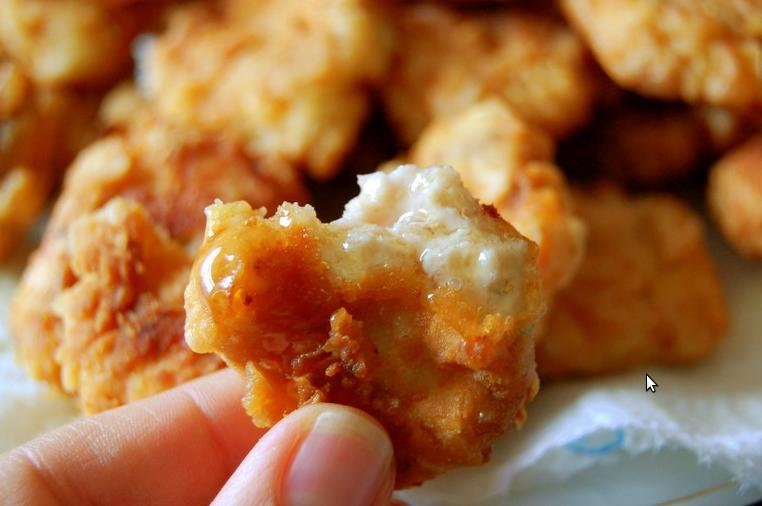

Tomato & Chicken Pasta

Description
Full of flavor and easy to make, this restaurant-quality wonder is sure to
delight the family.
Takes only 40 mins total to make.
Ingredients
- 10 ounces boneless skinless chicken breasts, cut into 1 inch pieces
- 1 tablespoon vegetable oil
- ¼ cup red wine
- 1 teaspoon salt, plus more to taste
- ½ cup diced onion
- 1 (14.5 ounce) can diced tomatoes
Steps
- Season the chicken as desired.
- Heat the oil in a 12-inch skillet over medium-high heat.
- Add the chicken and cook until well browned, stirring often.